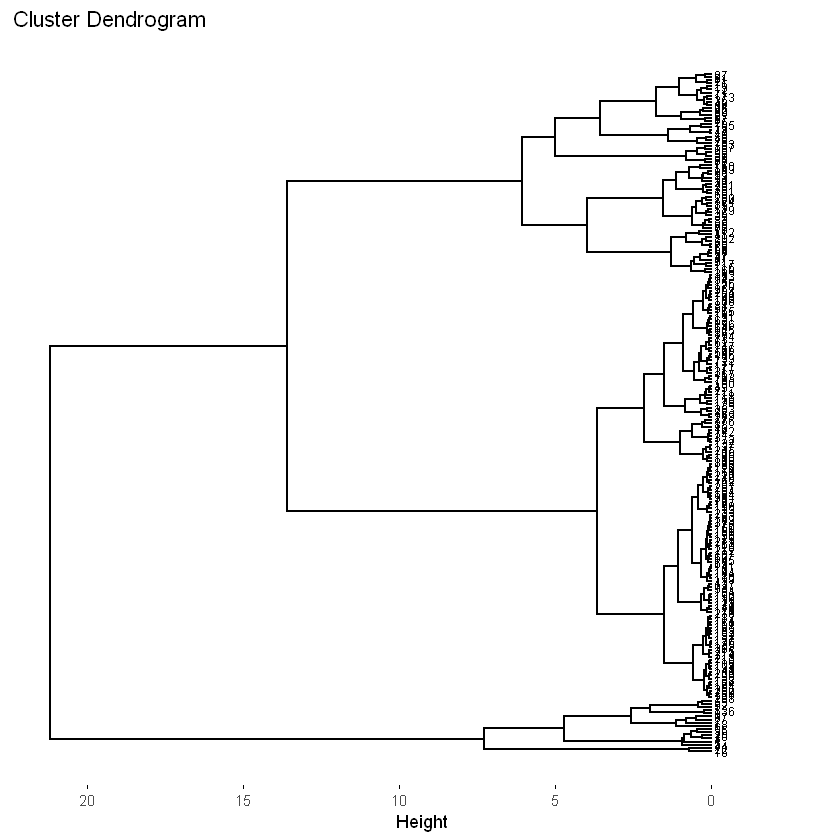

<!DOCTYPE html>
<html class="writer-html5" lang="y" >
<head>
  <meta charset="utf-8">
  
  <meta name="viewport" content="width=device-width, initial-scale=1.0">
  
  <title>Cluster jerárquico en R &mdash; Material Curso 1 documentation</title>
  

  
  <link rel="stylesheet" href="../../_static/css/theme.css" type="text/css" />
  <link rel="stylesheet" href="../../_static/pygments.css" type="text/css" />

  
  
  
  

  
  <!--[if lt IE 9]>
    <script src="../../_static/js/html5shiv.min.js"></script>
  <![endif]-->
  
    
      <script type="text/javascript" id="documentation_options" data-url_root="../../" src="../../_static/documentation_options.js"></script>
        <script src="../../_static/jquery.js"></script>
        <script src="../../_static/underscore.js"></script>
        <script src="../../_static/doctools.js"></script>
        <script src="../../_static/language_data.js"></script>
        <script async="async" src="https://cdnjs.cloudflare.com/ajax/libs/mathjax/2.7.7/latest.js?config=TeX-AMS-MML_HTMLorMML"></script>
    
    <script type="text/javascript" src="../../_static/js/theme.js"></script>

    
    <link rel="index" title="Index" href="../../genindex.html" />
    <link rel="search" title="Search" href="../../search.html" />
    <link rel="next" title="Taller Análisis Clustering" href="../Taller clustering/Taller Análisis Clustering.html" />
    <link rel="prev" title="Clusters Jerárquicos" href="../Clustering jerarquico/Cluster_jerárquico.html" /> 
</head>

<body class="wy-body-for-nav">

   
  <div class="wy-grid-for-nav">
    
    <nav data-toggle="wy-nav-shift" class="wy-nav-side">
      <div class="wy-side-scroll">
        <div class="wy-side-nav-search" >
          

          
            <a href="../../index.html" class="icon icon-home" alt="Documentation Home"> Material Curso
          

          
          </a>

          
            
            
          

          
<div role="search">
  <form id="rtd-search-form" class="wy-form" action="../../search.html" method="get">
    <input type="text" name="q" placeholder="Search docs" />
    <input type="hidden" name="check_keywords" value="yes" />
    <input type="hidden" name="area" value="default" />
  </form>
</div>

          
        </div>

        
        <div class="wy-menu wy-menu-vertical" data-spy="affix" role="navigation" aria-label="main navigation">
          
            
            
              
            
            
              <p class="caption"><span class="caption-text">Análisis de datos:</span></p>
<ul>
<li class="toctree-l1"><a class="reference internal" href="../../Introducción a R/index.html">Introducción a R</a></li>
<li class="toctree-l1"><a class="reference internal" href="../../ggplot2/index.html">ggplot2</a></li>
<li class="toctree-l1"><a class="reference internal" href="../../Regresión lineal/index.html">Regresión lineal</a></li>
</ul>
<p class="caption"><span class="caption-text">Análisis exploratorio de datos:</span></p>
<ul class="current">
<li class="toctree-l1"><a class="reference internal" href="../../Análisis gráfico/index.html">Análisis gráfico</a></li>
<li class="toctree-l1"><a class="reference internal" href="../../Análisis multivariado de datos/index.html">Análisis multivariado de datos</a></li>
<li class="toctree-l1"><a class="reference internal" href="../../Análisis de componentes principales/index.html">Análisis de componentes principales</a></li>
<li class="toctree-l1"><a class="reference internal" href="../../Análisis factorial/index.html">Análisis Factorial</a></li>
<li class="toctree-l1 current"><a class="reference internal" href="../index.html">Clustering</a><ul class="current">
<li class="toctree-l2"><a class="reference internal" href="../Teoría K-Means/Teoría K-Means.html">Teoría K-Means</a></li>
<li class="toctree-l2"><a class="reference internal" href="../K-Means en R/K-Means en R.html">K-Means en R</a></li>
<li class="toctree-l2"><a class="reference internal" href="../Clustering jerarquico/Cluster_jerárquico.html">Clusters Jerárquicos</a></li>
<li class="toctree-l2 current"><a class="current reference internal" href="#">Cluster jerárquico en R</a><ul>
<li class="toctree-l3"><a class="reference internal" href="#escalamiento-de-variables">Escalamiento de variables:</a></li>
<li class="toctree-l3"><a class="reference internal" href="#distancias">Distancias:</a></li>
<li class="toctree-l3"><a class="reference internal" href="#cluster-jerarquico">Cluster jerárquico:</a></li>
<li class="toctree-l3"><a class="reference internal" href="#dendograma">Dendograma:</a></li>
<li class="toctree-l3"><a class="reference internal" href="#distancia-cofenetica-cophenetic-distances">Distancia cofenética (cophenetic distances):</a></li>
<li class="toctree-l3"><a class="reference internal" href="#corte-del-dendograma">Corte del dendograma:</a></li>
<li class="toctree-l3"><a class="reference internal" href="#otra-forma">Otra forma:</a></li>
<li class="toctree-l3"><a class="reference internal" href="#visualizacion-del-dendograma">Visualización del dendograma</a></li>
<li class="toctree-l3"><a class="reference internal" href="#ejemplo-base-de-datos-con-etiquetas">Ejemplo base de datos con etiquetas:</a></li>
</ul>
</li>
<li class="toctree-l2"><a class="reference internal" href="../Taller clustering/Taller Análisis Clustering.html">Taller Análisis Clustering</a></li>
</ul>
</li>
<li class="toctree-l1"><a class="reference internal" href="../../Escalamiento Multidimensional/index.html">Escalamiento Multidimensional</a></li>
<li class="toctree-l1"><a class="reference internal" href="../../Datos faltantes/index.html">Datos faltantes</a></li>
<li class="toctree-l1"><a class="reference internal" href="../../Análsis de correspondencia/index.html">Análisis de correspondencia</a></li>
</ul>
<p class="caption"><span class="caption-text">Teoría de portafolios:</span></p>
<ul>
<li class="toctree-l1"><a class="reference internal" href="../../Generalidades del Mercado Colombiano/index.html">Generalidades del Mercado Colombiano</a></li>
<li class="toctree-l1"><a class="reference internal" href="../../Manejo de R-Studio/index.html">Conceptos Previos: Introducción a R y R-Studio</a></li>
<li class="toctree-l1"><a class="reference internal" href="../../Conceptos Básicos de Estadística/index.html">Conceptos Básicos de Estadística</a></li>
<li class="toctree-l1"><a class="reference internal" href="../../Teoría de Portafolios/index.html">Teoría de Portafolios</a></li>
<li class="toctree-l1"><a class="reference internal" href="../../Selección de Carteras/index.html">Selección de Cartera</a></li>
<li class="toctree-l1"><a class="reference internal" href="../../Mercado de Renta Fija/index.html">Mercado de Renta fija</a></li>
</ul>
<p class="caption"><span class="caption-text">Modelación:</span></p>
<ul>
<li class="toctree-l1"><a class="reference internal" href="../../Caracterización de las series de tiempo/index.html">Caracterización de las series de tiempo</a></li>
<li class="toctree-l1"><a class="reference internal" href="../../Modelos autorregresivos/index.html">ARIMA: autoregresivo integrado de medias móviles</a></li>
<li class="toctree-l1"><a class="reference internal" href="../../Deep Learning para pronóstico/index.html">Deep Learning para pronóstico</a></li>
</ul>

            
          
        </div>
        
      </div>
    </nav>

    <section data-toggle="wy-nav-shift" class="wy-nav-content-wrap">

      
      <nav class="wy-nav-top" aria-label="top navigation">
        
          <i data-toggle="wy-nav-top" class="fa fa-bars"></i>
          <a href="../../index.html">Material Curso</a>
        
      </nav>


      <div class="wy-nav-content">
        
        <div class="rst-content">
        
          


<div role="navigation" aria-label="breadcrumbs navigation">

  <ul class="wy-breadcrumbs">
    
      <li><a href="../../index.html" class="icon icon-home"></a> &raquo;</li>
        
          <li><a href="../index.html">Clustering</a> &raquo;</li>
        
      <li>Cluster jerárquico en R</li>
    
    
      <li class="wy-breadcrumbs-aside">
        
            
            <a href="../../_sources/Clustering/Cluster jerárquico en R/Cluster jerárquico en R.rst.txt" rel="nofollow"> View page source</a>
          
        
      </li>
    
  </ul>

  
  <hr/>
</div>
          <div role="main" class="document" itemscope="itemscope" itemtype="http://schema.org/Article">
           <div itemprop="articleBody">
            
  <div class="section" id="cluster-jerarquico-en-r">
<h1>Cluster jerárquico en R<a class="headerlink" href="#cluster-jerarquico-en-r" title="Permalink to this headline">¶</a></h1>
<p><strong>Importar datos:</strong></p>
<div class="highlight-r notranslate"><div class="highlight"><pre><span></span><span class="n">datos</span> <span class="o">&lt;-</span> <span class="nf">read.csv</span><span class="p">(</span><span class="s">&quot;EAM_2019-v2.csv&quot;</span><span class="p">,</span> <span class="n">sep</span> <span class="o">=</span> <span class="s">&quot;;&quot;</span><span class="p">,</span> <span class="n">dec</span> <span class="o">=</span> <span class="s">&quot;,&quot;</span><span class="p">,</span> <span class="n">header</span> <span class="o">=</span> <span class="bp">T</span><span class="p">)</span>
<span class="nf">print</span><span class="p">(</span><span class="nf">head</span><span class="p">(</span><span class="n">datos</span><span class="p">))</span>
</pre></div>
</div>
<div class="highlight-default notranslate"><div class="highlight"><pre><span></span>  <span class="n">ï</span><span class="o">..</span><span class="n">gasto_personal</span> <span class="n">inversion_AF</span>    <span class="n">ventas</span>
<span class="mi">1</span>          <span class="mi">32334949</span>     <span class="mi">92544622</span> <span class="mi">321070109</span>
<span class="mi">2</span>           <span class="mi">5669798</span>     <span class="mi">69317638</span>  <span class="mi">86597330</span>
<span class="mi">3</span>          <span class="mi">11081213</span>     <span class="mi">50853587</span>  <span class="mi">26727389</span>
<span class="mi">4</span>          <span class="mi">47892609</span>     <span class="mi">42426113</span> <span class="mi">388005721</span>
<span class="mi">5</span>          <span class="mi">56410101</span>     <span class="mi">35164028</span> <span class="mi">390070138</span>
<span class="mi">6</span>          <span class="mi">20536798</span>     <span class="mi">27028346</span> <span class="mi">490639882</span>
</pre></div>
</div>
<div class="highlight-r notranslate"><div class="highlight"><pre><span></span><span class="nf">colnames</span><span class="p">(</span><span class="n">datos</span><span class="p">)</span> <span class="o">&lt;-</span> <span class="nf">c</span><span class="p">(</span><span class="s">&quot;Gasto_personal&quot;</span><span class="p">,</span> <span class="s">&quot;Inversión_AF&quot;</span><span class="p">,</span> <span class="s">&quot;Ventas&quot;</span><span class="p">)</span>
</pre></div>
</div>
<div class="highlight-r notranslate"><div class="highlight"><pre><span></span><span class="nf">str</span><span class="p">(</span><span class="n">datos</span><span class="p">)</span>
</pre></div>
</div>
<div class="highlight-default notranslate"><div class="highlight"><pre><span></span>&#39;data.frame&#39;:       216 obs. of  3 variables:
 $ Gasto_personal: int  32334949 5669798 11081213 47892609 56410101 20536798 14001910 38533922 21397321 3478034 ...
 $ Inversión_AF  : int  92544622 69317638 50853587 42426113 35164028 27028346 25150313 23019658 22007282 21924323 ...
 $ Ventas        : int  321070109 86597330 26727389 388005721 390070138 490639882 379365700 488079500 233432780 9932602 ...
</pre></div>
</div>
<div class="highlight-r notranslate"><div class="highlight"><pre><span></span><span class="nf">dim</span><span class="p">(</span><span class="n">datos</span><span class="p">)</span>
</pre></div>
</div>
<style>
.list-inline {list-style: none; margin:0; padding: 0}
.list-inline>li {display: inline-block}
.list-inline>li:not(:last-child)::after {content: "\00b7"; padding: 0 .5ex}
</style>
<ol class=list-inline><li>216</li><li>3</li></ol><div class="highlight-r notranslate"><div class="highlight"><pre><span></span><span class="n">df</span> <span class="o">&lt;-</span> <span class="n">datos</span><span class="p">[,</span> <span class="nf">c</span><span class="p">(</span><span class="s">&quot;Gasto_personal&quot;</span><span class="p">,</span> <span class="s">&quot;Ventas&quot;</span><span class="p">)]</span>
</pre></div>
</div>
<div class="highlight-r notranslate"><div class="highlight"><pre><span></span><span class="nf">library</span><span class="p">(</span><span class="n">ggplot2</span><span class="p">)</span>
</pre></div>
</div>
<div class="highlight-r notranslate"><div class="highlight"><pre><span></span><span class="nf">ggplot</span><span class="p">(</span><span class="n">data</span> <span class="o">=</span> <span class="n">df</span><span class="p">,</span> <span class="nf">aes</span><span class="p">(</span><span class="n">x</span> <span class="o">=</span> <span class="n">Gasto_personal</span><span class="p">,</span> <span class="n">y</span> <span class="o">=</span> <span class="n">Ventas</span><span class="p">))</span><span class="o">+</span>
    <span class="nf">geom_point</span><span class="p">()</span>
</pre></div>
</div>
<a class="reference internal image-reference" href="../../_images/output_8_0.png"></a>
<div class="section" id="escalamiento-de-variables">
<h2>Escalamiento de variables:<a class="headerlink" href="#escalamiento-de-variables" title="Permalink to this headline">¶</a></h2>
<div class="highlight-r notranslate"><div class="highlight"><pre><span></span><span class="n">df_scaled</span> <span class="o">&lt;-</span> <span class="nf">scale</span><span class="p">(</span><span class="n">df</span><span class="p">)</span>
</pre></div>
</div>
</div>
<div class="section" id="distancias">
<h2>Distancias:<a class="headerlink" href="#distancias" title="Permalink to this headline">¶</a></h2>
<div class="highlight-r notranslate"><div class="highlight"><pre><span></span><span class="n">dist</span> <span class="o">&lt;-</span> <span class="nf">dist</span><span class="p">(</span><span class="n">df_scaled</span><span class="p">,</span> <span class="n">method</span> <span class="o">=</span> <span class="s">&quot;euclidean&quot;</span><span class="p">)</span>
</pre></div>
</div>
<p><strong>Matriz de distancias:</strong></p>
<div class="highlight-r notranslate"><div class="highlight"><pre><span></span><span class="nf">print</span><span class="p">(</span><span class="nf">as.matrix</span><span class="p">(</span><span class="n">dist</span><span class="p">)[</span><span class="m">1</span><span class="o">:</span><span class="m">6</span><span class="p">,</span> <span class="m">1</span><span class="o">:</span><span class="m">6</span><span class="p">])</span>
</pre></div>
</div>
<div class="highlight-default notranslate"><div class="highlight"><pre><span></span>         <span class="mi">1</span>         <span class="mi">2</span>         <span class="mi">3</span>         <span class="mi">4</span>         <span class="mi">5</span>        <span class="mi">6</span>
<span class="mi">1</span> <span class="mf">0.000000</span> <span class="mf">2.9088632</span> <span class="mf">3.0901009</span> <span class="mf">1.3159100</span> <span class="mf">1.9144336</span> <span class="mf">1.763064</span>
<span class="mi">2</span> <span class="mf">2.908863</span> <span class="mf">0.0000000</span> <span class="mf">0.6745543</span> <span class="mf">4.1740457</span> <span class="mf">4.6909913</span> <span class="mf">3.798116</span>
<span class="mi">3</span> <span class="mf">3.090101</span> <span class="mf">0.6745543</span> <span class="mf">0.0000000</span> <span class="mf">4.2665706</span> <span class="mf">4.7206485</span> <span class="mf">4.227799</span>
<span class="mi">4</span> <span class="mf">1.315910</span> <span class="mf">4.1740457</span> <span class="mf">4.2665706</span> <span class="mf">0.0000000</span> <span class="mf">0.6410866</span> <span class="mf">2.255214</span>
<span class="mi">5</span> <span class="mf">1.914434</span> <span class="mf">4.6909913</span> <span class="mf">4.7206485</span> <span class="mf">0.6410866</span> <span class="mf">0.0000000</span> <span class="mf">2.846148</span>
<span class="mi">6</span> <span class="mf">1.763064</span> <span class="mf">3.7981163</span> <span class="mf">4.2277993</span> <span class="mf">2.2552142</span> <span class="mf">2.8461482</span> <span class="mf">0.000000</span>
</pre></div>
</div>
</div>
<div class="section" id="cluster-jerarquico">
<h2>Cluster jerárquico:<a class="headerlink" href="#cluster-jerarquico" title="Permalink to this headline">¶</a></h2>
<p>Usaremos la función <code class="docutils literal notranslate"><span class="pre">hclust()</span></code> de la librería <code class="docutils literal notranslate"><span class="pre">stat</span></code>.</p>
<p>En esta función se debe pasar el vector con las distancias calculadas
con la función <code class="docutils literal notranslate"><span class="pre">dist()</span></code>.</p>
<p>Para realizar el agrupamiento la función <code class="docutils literal notranslate"><span class="pre">hclust()</span></code> tiene varios
métodos: <code class="docutils literal notranslate"><span class="pre">&quot;ward.D&quot;</span></code> , <code class="docutils literal notranslate"><span class="pre">&quot;ward.D2&quot;</span></code>, <code class="docutils literal notranslate"><span class="pre">&quot;single&quot;</span></code>, <code class="docutils literal notranslate"><span class="pre">&quot;complete&quot;</span></code>,
<code class="docutils literal notranslate"><span class="pre">&quot;average&quot;</span></code>, <code class="docutils literal notranslate"><span class="pre">&quot;mcquitty&quot;</span></code>, <code class="docutils literal notranslate"><span class="pre">&quot;median&quot;</span></code> o <code class="docutils literal notranslate"><span class="pre">&quot;centroid&quot;</span></code>.</p>
<ul class="simple">
<li><p><code class="docutils literal notranslate"><span class="pre">&quot;ward.D&quot;</span></code> y <code class="docutils literal notranslate"><span class="pre">&quot;ward.D2&quot;</span></code>: minimiza la varianza total dentro del
cluster. En cada paso, une el par de cluster con una distancia mínima
entre clusters. <code class="docutils literal notranslate"><span class="pre">&quot;ward.D2&quot;</span></code> eleva al cuadrado las distancias
calculadas con <code class="docutils literal notranslate"><span class="pre">dist()</span></code>.</p></li>
<li><p><code class="docutils literal notranslate"><span class="pre">&quot;single&quot;</span></code>: a diferencia del anterior, lo hace con el valor mínimo.
Tiende a producir grupos largo. Es el método de la distancia mínima.</p></li>
<li><p><code class="docutils literal notranslate"><span class="pre">&quot;complete&quot;</span></code>: la distancia entre dos grupos se define como el valor
máximo de todas las distancias por pares entre los elementos del
grupo 1 y los elementos del grupo 2. Tiene a producir cluster más
compactos. Es el método de la distancia máxima.</p></li>
<li><p><code class="docutils literal notranslate"><span class="pre">&quot;average&quot;</span></code>: la distancia entre dos clusters se define como la
distancia promedio entre los elementos del cluster 1 y los elementos
del cluster 2. Es el método del promedio.</p></li>
<li><p><code class="docutils literal notranslate"><span class="pre">&quot;mcquitty&quot;</span></code>: promedio ponderado.</p></li>
<li><p><code class="docutils literal notranslate"><span class="pre">&quot;median&quot;</span></code>: mediana.</p></li>
<li><p><code class="docutils literal notranslate"><span class="pre">&quot;centroid&quot;</span></code>: usa las distancias entre el centroide 1 y el
centroide 2.</p></li>
</ul>
<div class="highlight-r notranslate"><div class="highlight"><pre><span></span><span class="n">hc</span> <span class="o">&lt;-</span> <span class="nf">hclust</span><span class="p">(</span><span class="n">d</span> <span class="o">=</span> <span class="n">dist</span><span class="p">,</span> <span class="n">method</span> <span class="o">=</span> <span class="s">&quot;ward.D2&quot;</span><span class="p">)</span>
<span class="nf">print</span><span class="p">(</span><span class="n">hc</span><span class="p">)</span>
</pre></div>
</div>
<div class="highlight-default notranslate"><div class="highlight"><pre><span></span><span class="n">Call</span><span class="p">:</span>
<span class="n">hclust</span><span class="p">(</span><span class="n">d</span> <span class="o">=</span> <span class="n">dist</span><span class="p">,</span> <span class="n">method</span> <span class="o">=</span> <span class="s2">&quot;ward.D2&quot;</span><span class="p">)</span>

<span class="n">Cluster</span> <span class="n">method</span>   <span class="p">:</span> <span class="n">ward</span><span class="o">.</span><span class="n">D2</span>
<span class="n">Distance</span>         <span class="p">:</span> <span class="n">euclidean</span>
<span class="n">Number</span> <span class="n">of</span> <span class="n">objects</span><span class="p">:</span> <span class="mi">216</span>
</pre></div>
</div>
</div>
<div class="section" id="dendograma">
<h2>Dendograma:<a class="headerlink" href="#dendograma" title="Permalink to this headline">¶</a></h2>
<p>Visualizaremos el dendograma con la función <code class="docutils literal notranslate"><span class="pre">fviz_dend()</span></code> de la
librería <code class="docutils literal notranslate"><span class="pre">factoextra</span></code>.</p>
<p>Los principales argumentos de esta función son:</p>
<ul class="simple">
<li><p><code class="docutils literal notranslate"><span class="pre">x</span></code>: el objeto creado con <code class="docutils literal notranslate"><span class="pre">hclust()</span></code>.</p></li>
<li><p><code class="docutils literal notranslate"><span class="pre">k</span></code>: cantidad de clusters. Primero no especificaremos este valor.</p></li>
<li><p><code class="docutils literal notranslate"><span class="pre">h</span></code>: para cortar el dendograma por altura. Primero no
especificaremos este valor.</p></li>
</ul>
<div class="highlight-r notranslate"><div class="highlight"><pre><span></span><span class="nf">library</span><span class="p">(</span><span class="s">&quot;factoextra&quot;</span><span class="p">)</span>
</pre></div>
</div>
<div class="highlight-default notranslate"><div class="highlight"><pre><span></span>Warning message:
&quot;package &#39;factoextra&#39; was built under R version 4.1.3&quot;
Welcome! Want to learn more? See two factoextra-related books at https://goo.gl/ve3WBa
</pre></div>
</div>
<div class="highlight-r notranslate"><div class="highlight"><pre><span></span><span class="nf">fviz_dend</span><span class="p">(</span><span class="n">hc</span><span class="p">)</span>
</pre></div>
</div>
<pre class="literal-block">Warning message:
&quot;<cite>guides(&lt;scale&gt; = FALSE)</cite> is deprecated. Please use <cite>guides(&lt;scale&gt; = &quot;none&quot;)</cite> instead.&quot;</pre>
<a class="reference internal image-reference" href="../../_images/output_21_1.png"></a>
</div>
<div class="section" id="distancia-cofenetica-cophenetic-distances">
<h2>Distancia cofenética (cophenetic distances):<a class="headerlink" href="#distancia-cofenetica-cophenetic-distances" title="Permalink to this headline">¶</a></h2>
<p>Para comprobar si las distancias del árbol reflejan las distancias
originales. Se calcula la correlación entre las distancias cofenéticas y
los datos de las distancias originales generadas por la función
<code class="docutils literal notranslate"><span class="pre">dist()</span></code>.</p>
<p>Cuanto más cerca esté el valor del coeficiente de correlación a 1, con
mayor precisión la solución de agrupación reflejará sus datos.</p>
<p>La distancia cofenética del árbol se calcula con la función
<code class="docutils literal notranslate"><span class="pre">cophenetic()</span></code>.</p>
<div class="highlight-r notranslate"><div class="highlight"><pre><span></span><span class="n">coph</span> <span class="o">&lt;-</span> <span class="nf">cophenetic</span><span class="p">(</span><span class="n">hc</span><span class="p">)</span>
</pre></div>
</div>
<div class="highlight-r notranslate"><div class="highlight"><pre><span></span><span class="nf">cor</span><span class="p">(</span><span class="n">dist</span><span class="p">,</span> <span class="n">coph</span><span class="p">)</span>
</pre></div>
</div>
0.802735921415624</div>
<div class="section" id="corte-del-dendograma">
<h2>Corte del dendograma:<a class="headerlink" href="#corte-del-dendograma" title="Permalink to this headline">¶</a></h2>
<p>El árbol se puede cortar a una altura determinada o por cantidad de
clusters.</p>
<p>La función de la base de R, <code class="docutils literal notranslate"><span class="pre">cutree()</span></code> permite cortar el árbol
generado por <code class="docutils literal notranslate"><span class="pre">hclust()</span></code>por cantidad de clusters, <code class="docutils literal notranslate"><span class="pre">k</span></code>, o por
altura, <code class="docutils literal notranslate"><span class="pre">h</span></code>. Devuelve un vector que contiene el número de cluster de
cada observación.</p>
<p><span class="math notranslate nohighlight">\(k = 3\)</span></p>
<div class="highlight-r notranslate"><div class="highlight"><pre><span></span><span class="n">grp</span> <span class="o">&lt;-</span> <span class="nf">cutree</span><span class="p">(</span><span class="n">hc</span><span class="p">,</span> <span class="n">k</span> <span class="o">=</span> <span class="m">3</span><span class="p">)</span>
<span class="nf">print</span><span class="p">(</span><span class="nf">head</span><span class="p">(</span><span class="n">grp</span><span class="p">))</span>           <span class="c1"># vector con los números del cluster de cada observación.</span>
</pre></div>
</div>
<div class="highlight-default notranslate"><div class="highlight"><pre><span></span><span class="p">[</span><span class="mi">1</span><span class="p">]</span> <span class="mi">1</span> <span class="mi">2</span> <span class="mi">2</span> <span class="mi">1</span> <span class="mi">1</span> <span class="mi">1</span>
</pre></div>
</div>
<p><strong>Cantidad de observaciones en cada cluster:</strong></p>
<div class="highlight-r notranslate"><div class="highlight"><pre><span></span><span class="nf">table</span><span class="p">(</span><span class="n">grp</span><span class="p">)</span>
</pre></div>
</div>
<div class="highlight-default notranslate"><div class="highlight"><pre><span></span><span class="n">grp</span>
  <span class="mi">1</span>   <span class="mi">2</span>   <span class="mi">3</span>
 <span class="mi">17</span> <span class="mi">135</span>  <span class="mi">64</span>
</pre></div>
</div>
<p><strong>Visualizar el dendograma cortado:</strong></p>
<div class="highlight-r notranslate"><div class="highlight"><pre><span></span><span class="nf">fviz_dend</span><span class="p">(</span><span class="n">hc</span><span class="p">,</span> <span class="n">k</span> <span class="o">=</span> <span class="m">3</span><span class="p">,</span>                        <span class="c1"># Cortar el árbol en k clusters.</span>
            <span class="n">color_labels_by_k</span> <span class="o">=</span> <span class="kc">TRUE</span><span class="p">,</span>       <span class="c1"># Color por clusters.</span>
            <span class="n">rect</span> <span class="o">=</span> <span class="kc">TRUE</span><span class="p">)</span>                    <span class="c1"># Agragar un rectángulo a cada cluster.</span>
</pre></div>
</div>
<pre class="literal-block">Warning message:
&quot;<cite>guides(&lt;scale&gt; = FALSE)</cite> is deprecated. Please use <cite>guides(&lt;scale&gt; = &quot;none&quot;)</cite> instead.&quot;</pre>
<a class="reference internal image-reference" href="../../_images/output_33_11.png"></a>
<p><strong>Visualizar los clusters en el gráfico de dispersión:</strong></p>
<div class="highlight-r notranslate"><div class="highlight"><pre><span></span><span class="nf">fviz_cluster</span><span class="p">(</span><span class="nf">list</span><span class="p">(</span><span class="n">data</span> <span class="o">=</span> <span class="n">df</span><span class="p">,</span> <span class="n">cluster</span> <span class="o">=</span> <span class="n">grp</span><span class="p">),</span>
            <span class="n">ellipse.type</span> <span class="o">=</span> <span class="s">&quot;convex&quot;</span><span class="p">,</span>                                <span class="c1"># Forma del cluster.</span>
            <span class="n">repel</span> <span class="o">=</span> <span class="kc">TRUE</span><span class="p">,</span>                                           <span class="c1"># Para evitar solapar las etiquetas</span>
            <span class="n">show.clust.cent</span> <span class="o">=</span> <span class="kc">TRUE</span><span class="p">,</span>                                 <span class="c1"># Centroides.</span>
            <span class="n">ggtheme</span> <span class="o">=</span> <span class="nf">theme_minimal</span><span class="p">())</span>
</pre></div>
</div>
<div class="highlight-default notranslate"><div class="highlight"><pre><span></span><span class="ne">Warning</span> <span class="n">message</span><span class="p">:</span>
<span class="s2">&quot;ggrepel: 148 unlabeled data points (too many overlaps). Consider increasing max.overlaps&quot;</span>
</pre></div>
</div>
<a class="reference internal image-reference" href="../../_images/output_35_1.png"></a>
</div>
<div class="section" id="otra-forma">
<h2>Otra forma:<a class="headerlink" href="#otra-forma" title="Permalink to this headline">¶</a></h2>
<p>Tenemos dos funciones del paquete <code class="docutils literal notranslate"><span class="pre">cluster</span></code> que calculan el
agrupamiento aglomerativo y divisivo.</p>
<ul class="simple">
<li><p><code class="docutils literal notranslate"><span class="pre">agnes()</span></code>: aglomerativo.</p></li>
<li><p><code class="docutils literal notranslate"><span class="pre">diana()</span></code>: Divisivo.</p></li>
</ul>
<p>Con estas funciones no se necesitan ejecutar <code class="docutils literal notranslate"><span class="pre">scale()</span></code>, <code class="docutils literal notranslate"><span class="pre">dist()</span></code> y
<code class="docutils literal notranslate"><span class="pre">hclust()</span></code> por separado.</p>
<div class="highlight-r notranslate"><div class="highlight"><pre><span></span><span class="nf">library</span><span class="p">(</span><span class="s">&quot;cluster&quot;</span><span class="p">)</span>
</pre></div>
</div>
<div class="highlight-default notranslate"><div class="highlight"><pre><span></span><span class="ne">Warning</span> <span class="n">message</span><span class="p">:</span>
<span class="s2">&quot;package &#39;cluster&#39; was built under R version 4.1.3&quot;</span>
</pre></div>
</div>
<div class="highlight-r notranslate"><div class="highlight"><pre><span></span><span class="n">agnes</span> <span class="o">&lt;-</span> <span class="nf">agnes</span><span class="p">(</span><span class="n">x</span> <span class="o">=</span> <span class="n">df</span><span class="p">,</span>                       <span class="c1"># Conjunto de datos original.</span>
               <span class="n">stand</span> <span class="o">=</span> <span class="kc">TRUE</span><span class="p">,</span>                  <span class="c1"># Escalamiento de las variables.</span>
                    <span class="n">metric</span> <span class="o">=</span> <span class="s">&quot;euclidean&quot;</span><span class="p">,</span>     <span class="c1"># Métodos para las distancias.</span>
                    <span class="n">method</span> <span class="o">=</span> <span class="s">&quot;ward&quot;</span><span class="p">)</span>         <span class="c1"># Método para el agrupamiento.</span>


<span class="n">diana</span> <span class="o">&lt;-</span> <span class="nf">diana</span><span class="p">(</span><span class="n">x</span> <span class="o">=</span> <span class="n">df</span><span class="p">,</span>
               <span class="n">stand</span> <span class="o">=</span> <span class="kc">TRUE</span><span class="p">,</span>
               <span class="n">metric</span> <span class="o">=</span> <span class="s">&quot;euclidean&quot;</span><span class="p">)</span>
</pre></div>
</div>
<div class="highlight-r notranslate"><div class="highlight"><pre><span></span><span class="nf">fviz_dend</span><span class="p">(</span><span class="n">agnes</span><span class="p">,</span> <span class="n">k</span> <span class="o">=</span> <span class="m">3</span><span class="p">)</span>
</pre></div>
</div>
<pre class="literal-block">Warning message:
&quot;<cite>guides(&lt;scale&gt; = FALSE)</cite> is deprecated. Please use <cite>guides(&lt;scale&gt; = &quot;none&quot;)</cite> instead.&quot;</pre>
<a class="reference internal image-reference" href="../../_images/output_40_1.png"></a>
<div class="highlight-r notranslate"><div class="highlight"><pre><span></span><span class="nf">fviz_dend</span><span class="p">(</span><span class="n">diana</span><span class="p">,</span> <span class="n">k</span> <span class="o">=</span> <span class="m">3</span><span class="p">)</span>
</pre></div>
</div>
<pre class="literal-block">Warning message:
&quot;<cite>guides(&lt;scale&gt; = FALSE)</cite> is deprecated. Please use <cite>guides(&lt;scale&gt; = &quot;none&quot;)</cite> instead.&quot;</pre>
<a class="reference internal image-reference" href="../../_images/output_41_1.png"></a>
</div>
<div class="section" id="visualizacion-del-dendograma">
<h2>Visualización del dendograma<a class="headerlink" href="#visualizacion-del-dendograma" title="Permalink to this headline">¶</a></h2>
<p><code class="docutils literal notranslate"><span class="pre">install.packages(&quot;dendextend&quot;)</span></code></p>
<p><strong>Gráfico inicial:</strong></p>
<div class="highlight-r notranslate"><div class="highlight"><pre><span></span><span class="nf">fviz_dend</span><span class="p">(</span><span class="n">hc</span><span class="p">,)</span>
</pre></div>
</div>
<pre class="literal-block">Warning message:
&quot;<cite>guides(&lt;scale&gt; = FALSE)</cite> is deprecated. Please use <cite>guides(&lt;scale&gt; = &quot;none&quot;)</cite> instead.&quot;</pre>
<a class="reference internal image-reference" href="../../_images/output_45_1.png"></a>
<p><strong>Títulos y etiquetas:</strong></p>
<div class="highlight-r notranslate"><div class="highlight"><pre><span></span><span class="nf">fviz_dend</span><span class="p">(</span><span class="n">hc</span><span class="p">,</span> <span class="n">cex</span> <span class="o">=</span> <span class="m">0.5</span><span class="p">,</span>
            <span class="n">main</span> <span class="o">=</span> <span class="s">&quot;Dendrogram - ward.D2&quot;</span><span class="p">,</span>
            <span class="n">xlab</span> <span class="o">=</span> <span class="s">&quot;Objects&quot;</span><span class="p">,</span> <span class="n">ylab</span> <span class="o">=</span> <span class="s">&quot;Distance&quot;</span><span class="p">,</span> <span class="n">sub</span> <span class="o">=</span> <span class="s">&quot;&quot;</span><span class="p">)</span>
</pre></div>
</div>
<pre class="literal-block">Warning message:
&quot;<cite>guides(&lt;scale&gt; = FALSE)</cite> is deprecated. Please use <cite>guides(&lt;scale&gt; = &quot;none&quot;)</cite> instead.&quot;</pre>
<a class="reference internal image-reference" href="../../_images/output_47_1.png"></a>
<p><strong>Horizontal:</strong></p>
<div class="highlight-r notranslate"><div class="highlight"><pre><span></span><span class="nf">fviz_dend</span><span class="p">(</span><span class="n">hc</span><span class="p">,</span> <span class="n">cex</span> <span class="o">=</span> <span class="m">0.5</span><span class="p">,</span> <span class="n">horiz</span> <span class="o">=</span> <span class="kc">TRUE</span><span class="p">)</span>
</pre></div>
</div>
<pre class="literal-block">Warning message:
&quot;<cite>guides(&lt;scale&gt; = FALSE)</cite> is deprecated. Please use <cite>guides(&lt;scale&gt; = &quot;none&quot;)</cite> instead.&quot;</pre>
<a class="reference internal image-reference" href="../../_images/output_49_1.png"></a>
<p><strong>Cluster sombreados:</strong></p>
<div class="highlight-r notranslate"><div class="highlight"><pre><span></span><span class="nf">fviz_dend</span><span class="p">(</span><span class="n">hc</span><span class="p">,</span> <span class="n">k</span> <span class="o">=</span> <span class="m">3</span><span class="p">,</span>
            <span class="n">cex</span> <span class="o">=</span> <span class="m">0.5</span><span class="p">,</span>
            <span class="n">k_colors</span> <span class="o">=</span> <span class="nf">c</span><span class="p">(</span><span class="s">&quot;#2E9FDF&quot;</span><span class="p">,</span> <span class="s">&quot;#00AFBB&quot;</span><span class="p">),</span>
            <span class="n">color_labels_by_k</span> <span class="o">=</span> <span class="kc">TRUE</span><span class="p">,</span>
            <span class="n">rect</span> <span class="o">=</span> <span class="kc">TRUE</span><span class="p">,</span>
            <span class="n">rect_border</span> <span class="o">=</span> <span class="nf">c</span><span class="p">(</span><span class="s">&quot;#2E9FDF&quot;</span><span class="p">,</span> <span class="s">&quot;#00AFBB&quot;</span><span class="p">),</span>
            <span class="n">rect_fill</span> <span class="o">=</span> <span class="kc">TRUE</span><span class="p">)</span>
</pre></div>
</div>
<pre class="literal-block">Warning message in get_col(col, k):
&quot;Length of color vector was shorter than the number of clusters - color vector was recycled&quot;
Warning message:
&quot;<cite>guides(&lt;scale&gt; = FALSE)</cite> is deprecated. Please use <cite>guides(&lt;scale&gt; = &quot;none&quot;)</cite> instead.&quot;
Warning message in if (color == &quot;cluster&quot;) color &lt;- &quot;default&quot;:
&quot;la condición tiene longitud &gt; 1 y sólo el primer elemento será usado&quot;</pre>
<a class="reference internal image-reference" href="../../_images/output_51_1.png"></a>
<p><strong>Otro tema:</strong></p>
<div class="highlight-r notranslate"><div class="highlight"><pre><span></span><span class="nf">fviz_dend</span><span class="p">(</span><span class="n">hc</span><span class="p">,</span> <span class="n">k</span> <span class="o">=</span> <span class="m">3</span><span class="p">,</span>
            <span class="n">cex</span> <span class="o">=</span> <span class="m">0.5</span><span class="p">,</span>
            <span class="n">k_colors</span> <span class="o">=</span> <span class="nf">c</span><span class="p">(</span><span class="s">&quot;#2E9FDF&quot;</span><span class="p">,</span> <span class="s">&quot;#00AFBB&quot;</span><span class="p">),</span>
            <span class="n">color_labels_by_k</span> <span class="o">=</span> <span class="kc">TRUE</span><span class="p">,</span>
            <span class="n">ggtheme</span> <span class="o">=</span> <span class="nf">theme_gray</span><span class="p">())</span>
</pre></div>
</div>
<pre class="literal-block">Warning message in get_col(col, k):
&quot;Length of color vector was shorter than the number of clusters - color vector was recycled&quot;
Warning message:
&quot;<cite>guides(&lt;scale&gt; = FALSE)</cite> is deprecated. Please use <cite>guides(&lt;scale&gt; = &quot;none&quot;)</cite> instead.&quot;</pre>
<a class="reference internal image-reference" href="../../_images/output_53_1.png"></a>
<p><strong>Paleta ``jco``:</strong></p>
<div class="highlight-r notranslate"><div class="highlight"><pre><span></span><span class="nf">fviz_dend</span><span class="p">(</span><span class="n">hc</span><span class="p">,</span> <span class="n">cex</span> <span class="o">=</span> <span class="m">0.5</span><span class="p">,</span> <span class="n">k</span> <span class="o">=</span> <span class="m">3</span><span class="p">,</span>
            <span class="n">k_colors</span> <span class="o">=</span> <span class="s">&quot;jco&quot;</span><span class="p">)</span>
</pre></div>
</div>
<pre class="literal-block">Warning message:
&quot;<cite>guides(&lt;scale&gt; = FALSE)</cite> is deprecated. Please use <cite>guides(&lt;scale&gt; = &quot;none&quot;)</cite> instead.&quot;</pre>
<a class="reference internal image-reference" href="../../_images/output_55_1.png"></a>
<p><strong>Horizontal y paleta ``jco``:</strong></p>
<div class="highlight-r notranslate"><div class="highlight"><pre><span></span><span class="nf">fviz_dend</span><span class="p">(</span><span class="n">hc</span><span class="p">,</span> <span class="n">k</span> <span class="o">=</span> <span class="m">3</span><span class="p">,</span> <span class="n">cex</span> <span class="o">=</span> <span class="m">0.4</span><span class="p">,</span> <span class="n">horiz</span> <span class="o">=</span> <span class="kc">TRUE</span><span class="p">,</span> <span class="n">k_colors</span> <span class="o">=</span> <span class="s">&quot;jco&quot;</span><span class="p">,</span>
            <span class="n">rect</span> <span class="o">=</span> <span class="kc">TRUE</span><span class="p">,</span> <span class="n">rect_border</span> <span class="o">=</span> <span class="s">&quot;jco&quot;</span><span class="p">,</span> <span class="n">rect_fill</span> <span class="o">=</span> <span class="kc">TRUE</span><span class="p">)</span>
</pre></div>
</div>
<pre class="literal-block">Warning message:
&quot;<cite>guides(&lt;scale&gt; = FALSE)</cite> is deprecated. Please use <cite>guides(&lt;scale&gt; = &quot;none&quot;)</cite> instead.&quot;</pre>
<a class="reference internal image-reference" href="../../_images/output_57_1.png"></a>
<p><strong>Circular:</strong></p>
<div class="highlight-r notranslate"><div class="highlight"><pre><span></span><span class="nf">fviz_dend</span><span class="p">(</span><span class="n">hc</span><span class="p">,</span> <span class="n">cex</span> <span class="o">=</span> <span class="m">0.5</span><span class="p">,</span> <span class="n">k</span> <span class="o">=</span> <span class="m">3</span><span class="p">,</span>
            <span class="n">k_colors</span> <span class="o">=</span> <span class="s">&quot;jco&quot;</span><span class="p">,</span> <span class="n">type</span> <span class="o">=</span> <span class="s">&quot;circular&quot;</span><span class="p">)</span>
</pre></div>
</div>
<pre class="literal-block">Warning message:
&quot;<cite>guides(&lt;scale&gt; = FALSE)</cite> is deprecated. Please use <cite>guides(&lt;scale&gt; = &quot;none&quot;)</cite> instead.&quot;</pre>
<a class="reference internal image-reference" href="../../_images/output_59_1.png"></a>
</div>
<div class="section" id="ejemplo-base-de-datos-con-etiquetas">
<h2>Ejemplo base de datos con etiquetas:<a class="headerlink" href="#ejemplo-base-de-datos-con-etiquetas" title="Permalink to this headline">¶</a></h2>
<div class="highlight-r notranslate"><div class="highlight"><pre><span></span><span class="n">datos2</span> <span class="o">&lt;-</span> <span class="nf">read.csv</span><span class="p">(</span><span class="s">&quot;Estado de resultados-2020.csv&quot;</span><span class="p">,</span> <span class="n">sep</span> <span class="o">=</span> <span class="s">&quot;;&quot;</span><span class="p">,</span> <span class="n">dec</span> <span class="o">=</span> <span class="s">&quot;,&quot;</span><span class="p">,</span> <span class="n">header</span> <span class="o">=</span> <span class="bp">T</span><span class="p">)</span>
</pre></div>
</div>
<div class="highlight-r notranslate"><div class="highlight"><pre><span></span><span class="nf">str</span><span class="p">(</span><span class="n">datos2</span><span class="p">)</span>
</pre></div>
</div>
<div class="highlight-default notranslate"><div class="highlight"><pre><span></span>&#39;data.frame&#39;:       2431 obs. of  25 variables:
 $ Clasificación.Industrial.Internacional.Uniforme.Versión.4.A.C..CIIU.                                                                                                                                                                                                           : chr  &quot;H4930 - Transporte por tuberías&quot; &quot;H4930 - Transporte por tuberías&quot; &quot;H4930 - Transporte por tuberías&quot; &quot;B0510 - Extracción de hulla (carbón de piedra)&quot; ...
 $ Departamento.de.la.dirección.del.domicilio                                                                                                                                                                                                                                     : chr  &quot;BOGOTA D.C.&quot; &quot;BOGOTA D.C.&quot; &quot;BOGOTA D.C.&quot; &quot;BOGOTA D.C.&quot; ...
 $ Ciudad.de.la.dirección.del.domicilio                                                                                                                                                                                                                                           : chr  &quot;BOGOTA D.C.&quot; &quot;BOGOTA D.C.&quot; &quot;BOGOTA D.C.&quot; &quot;BOGOTA D.C.&quot; ...
 $ Ingresos.de.actividades.ordinarias                                                                                                                                                                                                                                             : num  1.28e+09 3.45e+08 1.27e+09 5.47e+08 1.05e+07 ...
 $ Costo.de.ventas                                                                                                                                                                                                                                                                : num  2.11e+08 6.90e+07 2.10e+08 6.68e+08 2.82e+06 ...
 $ Ganancia.bruta                                                                                                                                                                                                                                                                 : int  1068652505 276350200 1059846508 -120135345 7678364 998518794 2434907 71030143 345277614 11502748 ...
 $ Otros.ingresos                                                                                                                                                                                                                                                                 : int  518601 1297021 521537 NA 204440 5269820 120010 696112 1200917 886120 ...
 $ Gastos.de.ventas                                                                                                                                                                                                                                                               : int  10888517 NA 10995074 40370796 NA 11927981 NA NA 162037834 4072887 ...
 $ Gastos.de.administración                                                                                                                                                                                                                                                       : int  19462303 5326805 19714849 6433695 1172780 18607768 2041618 39451679 93520107 2122394 ...
 $ Otros.gastos                                                                                                                                                                                                                                                                   : int  NA 7316716 NA NA 2718133 NA 143129 34551428 8240400 636098 ...
 $ Otras.ganancias..pérdidas.                                                                                                                                                                                                                                                     : int  NA NA NA 127926859 0 NA NA NA NA NA ...
 $ Ganancia..pérdida..por.actividades.de.operación                                                                                                                                                                                                                                : int  1038820286 265003700 1029658122 -39012977 3991891 973252865 370170 -2276852 82680190 5557489 ...
 $ Diferencia.entre.el.importe.en.libros.de.dividendos.pagaderos.e.importe.en.libros.de.activos.distribuidos.distintos.al.efectivo                                                                                                                                                : int  NA NA NA NA NA NA NA NA NA 0 ...
 $ Ganancias..pérdidas..que.surgen.de.la.baja.en.cuentas.de.activos.financieros.medidos.al.costo.amortizado                                                                                                                                                                       : int  NA NA NA NA NA NA NA NA NA 0 ...
 $ Ingresos.financieros                                                                                                                                                                                                                                                           : int  93766912 9573579 NA 3221283 5110192 NA 91804 NA 898026 129379 ...
 $ Costos.financieros                                                                                                                                                                                                                                                             : int  NA NA 173721640 18086470 5026816 72100638 281008 3185442 383162 4138026 ...
 $ Deterioro.de.valor.de.ganancias.y.reversión.de.pérdidas.por.deterioro.de.valor..pérdidas.por.deterioro.de.valor..determinado.de.acuerdo.con.la.NIIF.9                                                                                                                          : int  NA NA NA NA NA NA NA NA NA 0 ...
 $ Ganancias..pérdidas..que.surgen.de.diferencias.entre.el.costo.amortizado.anterior.y.el.valor.razonable.de.activos.financieros.reclasificados.de.la.categoría.de.medición.costo.amortizado.a.la.categoría.de.medición.de.valor.razonable.con.cambios.en.resultados              : int  NA NA NA NA NA NA NA NA NA 0 ...
 $ Ganancia..pérdida..acumulada.anteriormente.reconocida.en.otro.resultado.integral.que.surge.de.la.reclasificación.de.activos.financieros.de.la.categoría.de.medición.de.valor.razonable.con.cambios.en.otro.resultado.integral.a.la.de.valor.razonable.con.cambios.en.resultados: int  NA NA NA NA NA NA NA NA NA 0 ...
 $ Ganancias..pérdidas..de.cobertura.por.cobertura.de.un.grupo.de.partidas.con.posiciones.de.riesgo.compensadoras                                                                                                                                                                 : int  NA NA NA NA NA NA NA NA NA 0 ...
 $ Ganancia..pérdida...antes.de.impuestos                                                                                                                                                                                                                                         : int  1132587198 274577279 855936482 -53878164 4075267 901152227 180966 -5462294 83195054 1548842 ...
 $ Ingreso..gasto..por.impuestos                                                                                                                                                                                                                                                  : int  253919393 87737163 328295928 30576990 1436579 276491490 -26116 9156763 29562532 364786 ...
 $ Ganancia..pérdida..procedente.de.operaciones.continuadas                                                                                                                                                                                                                       : int  878667805 186840116 527640554 -84455154 2638688 624660737 207082 -14619057 53632522 1184056 ...
 $ Ganancia..pérdida..procedente.de.operaciones.discontinuadas                                                                                                                                                                                                                    : int  NA NA NA NA NA NA NA NA NA NA ...
 $ Ganancia..pérdida.                                                                                                                                                                                                                                                             : int  878667805 186840116 527640554 -84455154 2638688 624660737 207082 -14619057 53632522 1184056 ...
</pre></div>
</div>
<p><strong>NA = 0:</strong></p>
<div class="highlight-r notranslate"><div class="highlight"><pre><span></span><span class="n">datos2</span><span class="p">[</span><span class="nf">is.na</span><span class="p">(</span><span class="n">datos2</span><span class="p">)]</span> <span class="o">&lt;-</span> <span class="m">0</span>
</pre></div>
</div>
<p><strong>Agrupar los datos por código ciuu y sumar:</strong></p>
<div class="highlight-r notranslate"><div class="highlight"><pre><span></span><span class="nf">library</span><span class="p">(</span><span class="n">tidyverse</span><span class="p">)</span>
</pre></div>
</div>
<div class="highlight-default notranslate"><div class="highlight"><pre><span></span>Warning message:
&quot;package &#39;tidyverse&#39; was built under R version 4.1.3&quot;
-- Attaching packages --------------------------------------- tidyverse 1.3.1 --

v tibble  3.1.6     v dplyr   1.0.8
v tidyr   1.2.0     v stringr 1.4.0
v readr   2.1.2     v forcats 0.5.1
v purrr   0.3.4

Warning message:
&quot;package &#39;readr&#39; was built under R version 4.1.3&quot;
-- Conflicts ------------------------------------------ tidyverse_conflicts() --
x dplyr::filter() masks stats::filter()
x dplyr::lag()    masks stats::lag()
</pre></div>
</div>
<div class="highlight-r notranslate"><div class="highlight"><pre><span></span><span class="n">df2</span> <span class="o">&lt;-</span> <span class="n">datos2</span> <span class="o">%&gt;%</span>
        <span class="nf">group_by</span><span class="p">(</span><span class="n">Clasificación.Industrial.Internacional.Uniforme.Versión.4.A.C..CIIU.</span><span class="p">)</span> <span class="o">%&gt;%</span>
        <span class="nf">summarise</span><span class="p">(</span><span class="n">Ingresos.de.actividades.ordinarias</span> <span class="o">=</span> <span class="nf">sum</span><span class="p">(</span><span class="n">Ingresos.de.actividades.ordinarias</span><span class="p">),</span>
                 <span class="n">Ganancia..pérdida.</span> <span class="o">=</span> <span class="nf">sum</span><span class="p">(</span><span class="n">Ganancia..pérdida.</span><span class="p">))</span>
</pre></div>
</div>
<div class="highlight-r notranslate"><div class="highlight"><pre><span></span><span class="nf">print</span><span class="p">(</span><span class="nf">head</span><span class="p">(</span><span class="n">df2</span><span class="p">))</span>
</pre></div>
</div>
<div class="highlight-default notranslate"><div class="highlight"><pre><span></span># A tibble: 6 x 3
  Clasificación.Industrial.Internacional.Unif~ Ingresos.de.act~ Ganancia..pérdi~
  &lt;chr&gt;                                                   &lt;dbl&gt;            &lt;dbl&gt;
1 A0112 - Cultivo de arroz                             48648526          1295439
2 A0113 - Cultivo de hortalizas, raíces y tub~         61372344          4820954
3 A0121 - Cultivo de frutas tropicales y subt~         14223971         -5429345
4 A0122 - Cultivo de plátano y banano                1135677192         52547865
5 A0123 - Cultivo de café                               3620827          -343548
6 A0124 - Cultivo de caña de azúcar                    53121589          5718585
</pre></div>
</div>
<p><strong>Eliminar los código ciuu y dejar solo los nombres de las actividades
económicas:</strong></p>
<div class="highlight-r notranslate"><div class="highlight"><pre><span></span><span class="n">df2</span><span class="o">$</span><span class="n">ciiu</span> <span class="o">&lt;-</span> <span class="nf">str_split_fixed</span><span class="p">(</span><span class="n">df2</span><span class="o">$</span><span class="n">Clasificación.Industrial.Internacional.Uniforme.Versión.4.A.C..CIIU.</span><span class="p">,</span> <span class="s">&quot;-&quot;</span><span class="p">,</span> <span class="m">2</span><span class="p">)[,</span><span class="m">2</span><span class="p">]</span>
<span class="n">df2</span><span class="o">$</span><span class="n">Clasificación.Industrial.Internacional.Uniforme.Versión.4.A.C..CIIU.</span> <span class="o">&lt;-</span> <span class="kc">NULL</span>
</pre></div>
</div>
<div class="highlight-r notranslate"><div class="highlight"><pre><span></span><span class="nf">print</span><span class="p">(</span><span class="nf">head</span><span class="p">(</span><span class="n">df2</span><span class="p">))</span>
</pre></div>
</div>
<div class="highlight-default notranslate"><div class="highlight"><pre><span></span># A tibble: 6 x 3
  Ingresos.de.actividades.ordinarias Ganancia..pérdida. ciiu
                               &lt;dbl&gt;              &lt;dbl&gt; &lt;chr&gt;
1                           48648526            1295439 &quot; Cultivo de arroz&quot;
2                           61372344            4820954 &quot; Cultivo de hortalizas~
3                           14223971           -5429345 &quot; Cultivo de frutas tro~
4                         1135677192           52547865 &quot; Cultivo de plátano y ~
5                            3620827            -343548 &quot; Cultivo de café&quot;
6                           53121589            5718585 &quot; Cultivo de caña de az~
</pre></div>
</div>
<p><strong>Asignar el index (los nombres de las filas):</strong></p>
<div class="highlight-r notranslate"><div class="highlight"><pre><span></span><span class="n">df2</span> <span class="o">&lt;-</span> <span class="nf">as.data.frame</span><span class="p">(</span><span class="n">df2</span><span class="p">)</span>
</pre></div>
</div>
<div class="highlight-r notranslate"><div class="highlight"><pre><span></span><span class="nf">rownames</span><span class="p">(</span><span class="n">df2</span><span class="p">)</span> <span class="o">&lt;-</span> <span class="n">df2</span><span class="o">$</span><span class="n">ciiu</span>
<span class="n">df2</span><span class="o">$</span><span class="n">ciiu</span> <span class="o">&lt;-</span> <span class="kc">NULL</span>
</pre></div>
</div>
<div class="highlight-r notranslate"><div class="highlight"><pre><span></span><span class="nf">print</span><span class="p">(</span><span class="nf">head</span><span class="p">(</span><span class="n">df2</span><span class="p">))</span>
</pre></div>
</div>
<div class="highlight-default notranslate"><div class="highlight"><pre><span></span>                                             <span class="n">Ingresos</span><span class="o">.</span><span class="n">de</span><span class="o">.</span><span class="n">actividades</span><span class="o">.</span><span class="n">ordinarias</span>
<span class="n">Cultivo</span> <span class="n">de</span> <span class="n">arroz</span>                                                       <span class="mi">48648526</span>
<span class="n">Cultivo</span> <span class="n">de</span> <span class="n">hortalizas</span><span class="p">,</span> <span class="n">raíces</span> <span class="n">y</span> <span class="n">tubérculos</span>                             <span class="mi">61372344</span>
<span class="n">Cultivo</span> <span class="n">de</span> <span class="n">frutas</span> <span class="n">tropicales</span> <span class="n">y</span> <span class="n">subtropicales</span>                           <span class="mi">14223971</span>
<span class="n">Cultivo</span> <span class="n">de</span> <span class="n">plátano</span> <span class="n">y</span> <span class="n">banano</span>                                          <span class="mi">1135677192</span>
<span class="n">Cultivo</span> <span class="n">de</span> <span class="n">café</span>                                                         <span class="mi">3620827</span>
<span class="n">Cultivo</span> <span class="n">de</span> <span class="n">caña</span> <span class="n">de</span> <span class="n">azúcar</span>                                              <span class="mi">53121589</span>
                                             <span class="n">Ganancia</span><span class="o">..</span><span class="n">pérdida</span><span class="o">.</span>
<span class="n">Cultivo</span> <span class="n">de</span> <span class="n">arroz</span>                                        <span class="mi">1295439</span>
<span class="n">Cultivo</span> <span class="n">de</span> <span class="n">hortalizas</span><span class="p">,</span> <span class="n">raíces</span> <span class="n">y</span> <span class="n">tubérculos</span>              <span class="mi">4820954</span>
<span class="n">Cultivo</span> <span class="n">de</span> <span class="n">frutas</span> <span class="n">tropicales</span> <span class="n">y</span> <span class="n">subtropicales</span>           <span class="o">-</span><span class="mi">5429345</span>
<span class="n">Cultivo</span> <span class="n">de</span> <span class="n">plátano</span> <span class="n">y</span> <span class="n">banano</span>                            <span class="mi">52547865</span>
<span class="n">Cultivo</span> <span class="n">de</span> <span class="n">café</span>                                         <span class="o">-</span><span class="mi">343548</span>
<span class="n">Cultivo</span> <span class="n">de</span> <span class="n">caña</span> <span class="n">de</span> <span class="n">azúcar</span>                               <span class="mi">5718585</span>
</pre></div>
</div>
<p><strong>Cambiar el nombre de las columnas (variables):</strong></p>
<div class="highlight-r notranslate"><div class="highlight"><pre><span></span><span class="nf">colnames</span><span class="p">(</span><span class="n">df2</span><span class="p">)</span> <span class="o">&lt;-</span> <span class="nf">c</span><span class="p">(</span><span class="s">&quot;Ingresos&quot;</span><span class="p">,</span> <span class="s">&quot;Utilidad_Neta&quot;</span><span class="p">)</span>
</pre></div>
</div>
<div class="highlight-r notranslate"><div class="highlight"><pre><span></span><span class="n">df2</span> <span class="o">&lt;-</span> <span class="n">df2</span><span class="p">[</span><span class="m">1</span><span class="o">:</span><span class="m">20</span><span class="p">,]</span>
</pre></div>
</div>
<div class="highlight-r notranslate"><div class="highlight"><pre><span></span><span class="nf">print</span><span class="p">(</span><span class="nf">head</span><span class="p">(</span><span class="n">df2</span><span class="p">))</span>
</pre></div>
</div>
<div class="highlight-default notranslate"><div class="highlight"><pre><span></span>                                               <span class="n">Ingresos</span> <span class="n">Utilidad_Neta</span>
<span class="n">Cultivo</span> <span class="n">de</span> <span class="n">arroz</span>                               <span class="mi">48648526</span>       <span class="mi">1295439</span>
<span class="n">Cultivo</span> <span class="n">de</span> <span class="n">hortalizas</span><span class="p">,</span> <span class="n">raíces</span> <span class="n">y</span> <span class="n">tubérculos</span>     <span class="mi">61372344</span>       <span class="mi">4820954</span>
<span class="n">Cultivo</span> <span class="n">de</span> <span class="n">frutas</span> <span class="n">tropicales</span> <span class="n">y</span> <span class="n">subtropicales</span>   <span class="mi">14223971</span>      <span class="o">-</span><span class="mi">5429345</span>
<span class="n">Cultivo</span> <span class="n">de</span> <span class="n">plátano</span> <span class="n">y</span> <span class="n">banano</span>                  <span class="mi">1135677192</span>      <span class="mi">52547865</span>
<span class="n">Cultivo</span> <span class="n">de</span> <span class="n">café</span>                                 <span class="mi">3620827</span>       <span class="o">-</span><span class="mi">343548</span>
<span class="n">Cultivo</span> <span class="n">de</span> <span class="n">caña</span> <span class="n">de</span> <span class="n">azúcar</span>                      <span class="mi">53121589</span>       <span class="mi">5718585</span>
</pre></div>
</div>
<div class="highlight-r notranslate"><div class="highlight"><pre><span></span><span class="nf">ggplot</span><span class="p">(</span><span class="n">data</span> <span class="o">=</span> <span class="n">df2</span><span class="p">,</span> <span class="nf">aes</span><span class="p">(</span><span class="n">x</span> <span class="o">=</span> <span class="n">Ingresos</span><span class="p">,</span> <span class="n">y</span> <span class="o">=</span> <span class="n">Utilidad_Neta</span><span class="p">))</span><span class="o">+</span>
    <span class="nf">geom_point</span><span class="p">()</span>
</pre></div>
</div>
<a class="reference internal image-reference" href="../../_images/output_80_01.png"></a>
<p><strong>Escalamiento de variables:</strong></p>
<div class="highlight-r notranslate"><div class="highlight"><pre><span></span><span class="n">df2_scaled</span> <span class="o">&lt;-</span> <span class="nf">scale</span><span class="p">(</span><span class="n">df2</span><span class="p">)</span>
</pre></div>
</div>
<p><strong>Distancias:</strong></p>
<div class="highlight-r notranslate"><div class="highlight"><pre><span></span><span class="n">dist2</span> <span class="o">&lt;-</span> <span class="nf">dist</span><span class="p">(</span><span class="n">df2_scaled</span><span class="p">,</span> <span class="n">method</span> <span class="o">=</span> <span class="s">&quot;euclidean&quot;</span><span class="p">)</span>
</pre></div>
</div>
<p><strong>Matriz de distancias:</strong></p>
<div class="highlight-r notranslate"><div class="highlight"><pre><span></span><span class="nf">print</span><span class="p">(</span><span class="nf">as.matrix</span><span class="p">(</span><span class="n">dist2</span><span class="p">)[</span><span class="m">1</span><span class="o">:</span><span class="m">6</span><span class="p">,</span> <span class="m">1</span><span class="o">:</span><span class="m">6</span><span class="p">])</span>
</pre></div>
</div>
<div class="highlight-default notranslate"><div class="highlight"><pre><span></span>                                              <span class="n">Cultivo</span> <span class="n">de</span> <span class="n">arroz</span>
<span class="n">Cultivo</span> <span class="n">de</span> <span class="n">arroz</span>                                     <span class="mf">0.0000000</span>
<span class="n">Cultivo</span> <span class="n">de</span> <span class="n">hortalizas</span><span class="p">,</span> <span class="n">raíces</span> <span class="n">y</span> <span class="n">tubérculos</span>           <span class="mf">0.1532693</span>
<span class="n">Cultivo</span> <span class="n">de</span> <span class="n">frutas</span> <span class="n">tropicales</span> <span class="n">y</span> <span class="n">subtropicales</span>         <span class="mf">0.2954620</span>
<span class="n">Cultivo</span> <span class="n">de</span> <span class="n">plátano</span> <span class="n">y</span> <span class="n">banano</span>                          <span class="mf">2.9120916</span>
<span class="n">Cultivo</span> <span class="n">de</span> <span class="n">café</span>                                      <span class="mf">0.1057447</span>
<span class="n">Cultivo</span> <span class="n">de</span> <span class="n">caña</span> <span class="n">de</span> <span class="n">azúcar</span>                            <span class="mf">0.1904133</span>
                                              <span class="n">Cultivo</span> <span class="n">de</span> <span class="n">hortalizas</span><span class="p">,</span> <span class="n">raíces</span> <span class="n">y</span> <span class="n">tubérculos</span>
<span class="n">Cultivo</span> <span class="n">de</span> <span class="n">arroz</span>                                                              <span class="mf">0.15326934</span>
<span class="n">Cultivo</span> <span class="n">de</span> <span class="n">hortalizas</span><span class="p">,</span> <span class="n">raíces</span> <span class="n">y</span> <span class="n">tubérculos</span>                                    <span class="mf">0.00000000</span>
<span class="n">Cultivo</span> <span class="n">de</span> <span class="n">frutas</span> <span class="n">tropicales</span> <span class="n">y</span> <span class="n">subtropicales</span>                                  <span class="mf">0.44855235</span>
<span class="n">Cultivo</span> <span class="n">de</span> <span class="n">plátano</span> <span class="n">y</span> <span class="n">banano</span>                                                   <span class="mf">2.78395735</span>
<span class="n">Cultivo</span> <span class="n">de</span> <span class="n">café</span>                                                               <span class="mf">0.24405950</span>
<span class="n">Cultivo</span> <span class="n">de</span> <span class="n">caña</span> <span class="n">de</span> <span class="n">azúcar</span>                                                     <span class="mf">0.04122236</span>
                                              <span class="n">Cultivo</span> <span class="n">de</span> <span class="n">frutas</span> <span class="n">tropicales</span> <span class="n">y</span> <span class="n">subtropicales</span>
<span class="n">Cultivo</span> <span class="n">de</span> <span class="n">arroz</span>                                                                 <span class="mf">0.2954620</span>
<span class="n">Cultivo</span> <span class="n">de</span> <span class="n">hortalizas</span><span class="p">,</span> <span class="n">raíces</span> <span class="n">y</span> <span class="n">tubérculos</span>                                       <span class="mf">0.4485524</span>
<span class="n">Cultivo</span> <span class="n">de</span> <span class="n">frutas</span> <span class="n">tropicales</span> <span class="n">y</span> <span class="n">subtropicales</span>                                     <span class="mf">0.0000000</span>
<span class="n">Cultivo</span> <span class="n">de</span> <span class="n">plátano</span> <span class="n">y</span> <span class="n">banano</span>                                                      <span class="mf">3.1736733</span>
<span class="n">Cultivo</span> <span class="n">de</span> <span class="n">café</span>                                                                  <span class="mf">0.2195407</span>
<span class="n">Cultivo</span> <span class="n">de</span> <span class="n">caña</span> <span class="n">de</span> <span class="n">azúcar</span>                                                        <span class="mf">0.4843143</span>
                                              <span class="n">Cultivo</span> <span class="n">de</span> <span class="n">plátano</span> <span class="n">y</span> <span class="n">banano</span>
<span class="n">Cultivo</span> <span class="n">de</span> <span class="n">arroz</span>                                                 <span class="mf">2.912092</span>
<span class="n">Cultivo</span> <span class="n">de</span> <span class="n">hortalizas</span><span class="p">,</span> <span class="n">raíces</span> <span class="n">y</span> <span class="n">tubérculos</span>                       <span class="mf">2.783957</span>
<span class="n">Cultivo</span> <span class="n">de</span> <span class="n">frutas</span> <span class="n">tropicales</span> <span class="n">y</span> <span class="n">subtropicales</span>                     <span class="mf">3.173673</span>
<span class="n">Cultivo</span> <span class="n">de</span> <span class="n">plátano</span> <span class="n">y</span> <span class="n">banano</span>                                      <span class="mf">0.000000</span>
<span class="n">Cultivo</span> <span class="n">de</span> <span class="n">café</span>                                                  <span class="mf">3.016988</span>
<span class="n">Cultivo</span> <span class="n">de</span> <span class="n">caña</span> <span class="n">de</span> <span class="n">azúcar</span>                                        <span class="mf">2.765486</span>
                                              <span class="n">Cultivo</span> <span class="n">de</span> <span class="n">café</span>
<span class="n">Cultivo</span> <span class="n">de</span> <span class="n">arroz</span>                                    <span class="mf">0.1057447</span>
<span class="n">Cultivo</span> <span class="n">de</span> <span class="n">hortalizas</span><span class="p">,</span> <span class="n">raíces</span> <span class="n">y</span> <span class="n">tubérculos</span>          <span class="mf">0.2440595</span>
<span class="n">Cultivo</span> <span class="n">de</span> <span class="n">frutas</span> <span class="n">tropicales</span> <span class="n">y</span> <span class="n">subtropicales</span>        <span class="mf">0.2195407</span>
<span class="n">Cultivo</span> <span class="n">de</span> <span class="n">plátano</span> <span class="n">y</span> <span class="n">banano</span>                         <span class="mf">3.0169883</span>
<span class="n">Cultivo</span> <span class="n">de</span> <span class="n">café</span>                                     <span class="mf">0.0000000</span>
<span class="n">Cultivo</span> <span class="n">de</span> <span class="n">caña</span> <span class="n">de</span> <span class="n">azúcar</span>                           <span class="mf">0.2747690</span>
                                              <span class="n">Cultivo</span> <span class="n">de</span> <span class="n">caña</span> <span class="n">de</span> <span class="n">azúcar</span>
<span class="n">Cultivo</span> <span class="n">de</span> <span class="n">arroz</span>                                             <span class="mf">0.19041328</span>
<span class="n">Cultivo</span> <span class="n">de</span> <span class="n">hortalizas</span><span class="p">,</span> <span class="n">raíces</span> <span class="n">y</span> <span class="n">tubérculos</span>                   <span class="mf">0.04122236</span>
<span class="n">Cultivo</span> <span class="n">de</span> <span class="n">frutas</span> <span class="n">tropicales</span> <span class="n">y</span> <span class="n">subtropicales</span>                 <span class="mf">0.48431431</span>
<span class="n">Cultivo</span> <span class="n">de</span> <span class="n">plátano</span> <span class="n">y</span> <span class="n">banano</span>                                  <span class="mf">2.76548585</span>
<span class="n">Cultivo</span> <span class="n">de</span> <span class="n">café</span>                                              <span class="mf">0.27476897</span>
<span class="n">Cultivo</span> <span class="n">de</span> <span class="n">caña</span> <span class="n">de</span> <span class="n">azúcar</span>                                    <span class="mf">0.00000000</span>
</pre></div>
</div>
<p><strong>Cluster jerárquico:</strong></p>
<div class="highlight-r notranslate"><div class="highlight"><pre><span></span><span class="n">hc2</span> <span class="o">&lt;-</span> <span class="nf">hclust</span><span class="p">(</span><span class="n">d</span> <span class="o">=</span> <span class="n">dist2</span><span class="p">,</span> <span class="n">method</span> <span class="o">=</span> <span class="s">&quot;ward.D2&quot;</span><span class="p">)</span>
<span class="nf">print</span><span class="p">(</span><span class="n">hc2</span><span class="p">)</span>
</pre></div>
</div>
<div class="highlight-default notranslate"><div class="highlight"><pre><span></span><span class="n">Call</span><span class="p">:</span>
<span class="n">hclust</span><span class="p">(</span><span class="n">d</span> <span class="o">=</span> <span class="n">dist2</span><span class="p">,</span> <span class="n">method</span> <span class="o">=</span> <span class="s2">&quot;ward.D2&quot;</span><span class="p">)</span>

<span class="n">Cluster</span> <span class="n">method</span>   <span class="p">:</span> <span class="n">ward</span><span class="o">.</span><span class="n">D2</span>
<span class="n">Distance</span>         <span class="p">:</span> <span class="n">euclidean</span>
<span class="n">Number</span> <span class="n">of</span> <span class="n">objects</span><span class="p">:</span> <span class="mi">20</span>
</pre></div>
</div>
<p><strong>Dendograma:</strong></p>
<div class="highlight-r notranslate"><div class="highlight"><pre><span></span><span class="nf">fviz_dend</span><span class="p">(</span><span class="n">hc2</span><span class="p">)</span>
</pre></div>
</div>
<pre class="literal-block">Warning message:
&quot;<cite>guides(&lt;scale&gt; = FALSE)</cite> is deprecated. Please use <cite>guides(&lt;scale&gt; = &quot;none&quot;)</cite> instead.&quot;</pre>
<a class="reference internal image-reference" href="../../_images/output_90_1.png"></a>
<p><strong>Distancia cofenética (cophenetic distances):</strong></p>
<div class="highlight-r notranslate"><div class="highlight"><pre><span></span><span class="n">coph2</span> <span class="o">&lt;-</span> <span class="nf">cophenetic</span><span class="p">(</span><span class="n">hc2</span><span class="p">)</span>
</pre></div>
</div>
<div class="highlight-r notranslate"><div class="highlight"><pre><span></span><span class="nf">cor</span><span class="p">(</span><span class="n">dist2</span><span class="p">,</span> <span class="n">coph2</span><span class="p">)</span>
</pre></div>
</div>
0.859184362589393<p><strong>Corte del dendograma:</strong></p>
<p><span class="math notranslate nohighlight">\(k = 2\)</span></p>
<div class="highlight-r notranslate"><div class="highlight"><pre><span></span><span class="n">grp2</span> <span class="o">&lt;-</span> <span class="nf">cutree</span><span class="p">(</span><span class="n">hc2</span><span class="p">,</span> <span class="n">k</span> <span class="o">=</span> <span class="m">2</span><span class="p">)</span>
<span class="nf">print</span><span class="p">(</span><span class="nf">head</span><span class="p">(</span><span class="n">grp2</span><span class="p">))</span>           <span class="c1"># vector con los números del cluster de cada observación.</span>
</pre></div>
</div>
<div class="highlight-default notranslate"><div class="highlight"><pre><span></span>                            <span class="n">Cultivo</span> <span class="n">de</span> <span class="n">arroz</span>
                                           <span class="mi">1</span>
  <span class="n">Cultivo</span> <span class="n">de</span> <span class="n">hortalizas</span><span class="p">,</span> <span class="n">raíces</span> <span class="n">y</span> <span class="n">tubérculos</span>
                                           <span class="mi">1</span>
<span class="n">Cultivo</span> <span class="n">de</span> <span class="n">frutas</span> <span class="n">tropicales</span> <span class="n">y</span> <span class="n">subtropicales</span>
                                           <span class="mi">1</span>
                 <span class="n">Cultivo</span> <span class="n">de</span> <span class="n">plátano</span> <span class="n">y</span> <span class="n">banano</span>
                                           <span class="mi">2</span>
                             <span class="n">Cultivo</span> <span class="n">de</span> <span class="n">café</span>
                                           <span class="mi">1</span>
                   <span class="n">Cultivo</span> <span class="n">de</span> <span class="n">caña</span> <span class="n">de</span> <span class="n">azúcar</span>
                                           <span class="mi">1</span>
</pre></div>
</div>
<p><strong>Cantidad de observaciones en cada cluster:</strong></p>
<div class="highlight-r notranslate"><div class="highlight"><pre><span></span><span class="nf">table</span><span class="p">(</span><span class="n">grp2</span><span class="p">)</span>
</pre></div>
</div>
<div class="highlight-default notranslate"><div class="highlight"><pre><span></span><span class="n">grp2</span>
 <span class="mi">1</span>  <span class="mi">2</span>
<span class="mi">16</span>  <span class="mi">4</span>
</pre></div>
</div>
<p><strong>Visualizar el dendograma:</strong></p>
<div class="highlight-r notranslate"><div class="highlight"><pre><span></span><span class="nf">fviz_dend</span><span class="p">(</span><span class="n">hc2</span><span class="p">,</span> <span class="n">k</span> <span class="o">=</span> <span class="m">2</span><span class="p">,</span> <span class="n">horiz</span> <span class="o">=</span> <span class="kc">TRUE</span><span class="p">)</span>
</pre></div>
</div>
<pre class="literal-block">Warning message:
&quot;<cite>guides(&lt;scale&gt; = FALSE)</cite> is deprecated. Please use <cite>guides(&lt;scale&gt; = &quot;none&quot;)</cite> instead.&quot;</pre>
<a class="reference internal image-reference" href="../../_images/output_100_1.png"></a>
<div class="highlight-r notranslate"><div class="highlight"><pre><span></span><span class="nf">fviz_dend</span><span class="p">(</span><span class="n">hc2</span><span class="p">,</span> <span class="n">cex</span> <span class="o">=</span> <span class="m">0.5</span><span class="p">,</span> <span class="n">k</span> <span class="o">=</span> <span class="m">2</span><span class="p">,</span> <span class="n">type</span> <span class="o">=</span> <span class="s">&quot;circular&quot;</span><span class="p">)</span>
</pre></div>
</div>
<pre class="literal-block">Warning message:
&quot;<cite>guides(&lt;scale&gt; = FALSE)</cite> is deprecated. Please use <cite>guides(&lt;scale&gt; = &quot;none&quot;)</cite> instead.&quot;</pre>
<a class="reference internal image-reference" href="../../_images/output_101_1.png"></a>
<p><strong>Visualizar los clusters en el gráfico de dispersión:</strong></p>
<div class="highlight-r notranslate"><div class="highlight"><pre><span></span><span class="nf">fviz_cluster</span><span class="p">(</span><span class="nf">list</span><span class="p">(</span><span class="n">data</span> <span class="o">=</span> <span class="n">df2</span><span class="p">,</span> <span class="n">cluster</span> <span class="o">=</span> <span class="n">grp2</span><span class="p">),</span>
            <span class="n">ellipse.type</span> <span class="o">=</span> <span class="s">&quot;convex&quot;</span><span class="p">,</span>                                <span class="c1"># Forma del cluster.</span>
            <span class="n">repel</span> <span class="o">=</span> <span class="kc">TRUE</span><span class="p">,</span>                                           <span class="c1"># Para evitar solapar las etiquetas</span>
            <span class="n">show.clust.cent</span> <span class="o">=</span> <span class="kc">TRUE</span><span class="p">,</span>                                 <span class="c1"># Centroides.</span>
            <span class="n">ggtheme</span> <span class="o">=</span> <span class="nf">theme_minimal</span><span class="p">())</span>
</pre></div>
</div>
<div class="highlight-default notranslate"><div class="highlight"><pre><span></span><span class="ne">Warning</span> <span class="n">message</span><span class="p">:</span>
<span class="s2">&quot;ggrepel: 7 unlabeled data points (too many overlaps). Consider increasing max.overlaps&quot;</span>
</pre></div>
</div>
<a class="reference internal image-reference" href="../../_images/output_103_1.png"></a>
</div>
</div>


           </div>
           
          </div>
          <footer>
  
    <div class="rst-footer-buttons" role="navigation" aria-label="footer navigation">
      
        <a href="../Taller clustering/Taller Análisis Clustering.html" class="btn btn-neutral float-right" title="Taller Análisis Clustering" accesskey="n" rel="next">Next <span class="fa fa-arrow-circle-right"></span></a>
      
      
        <a href="../Clustering jerarquico/Cluster_jerárquico.html" class="btn btn-neutral float-left" title="Clusters Jerárquicos" accesskey="p" rel="prev"><span class="fa fa-arrow-circle-left"></span> Previous</a>
      
    </div>
  

  <hr/>

  <div role="contentinfo">
    <p>
        
        &copy; Copyright 2020, Natalia Acevedo Prins

    </p>
  </div>
    
    
    
    Built with <a href="http://sphinx-doc.org/">Sphinx</a> using a
    
    <a href="https://github.com/rtfd/sphinx_rtd_theme">theme</a>
    
    provided by <a href="https://readthedocs.org">Read the Docs</a>. 

</footer>

        </div>
      </div>

    </section>

  </div>
  

  <script type="text/javascript">
      jQuery(function () {
          SphinxRtdTheme.Navigation.enable(true);
      });
  </script>

  
  
    
   

</body>
</html>